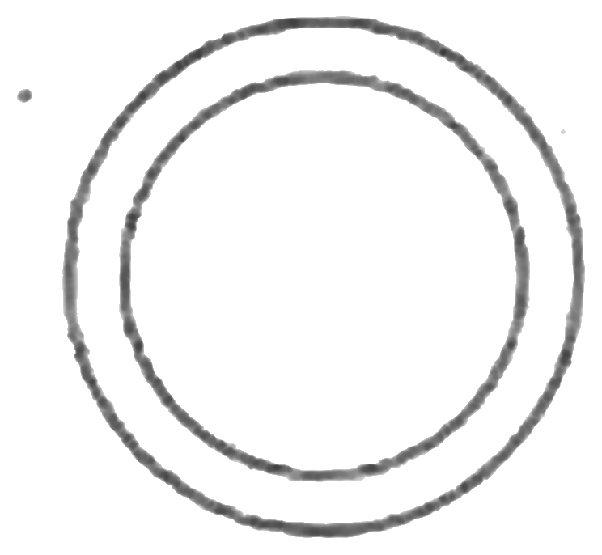

מקבץ 31
10 שאלות · עמודים 127–130 בספר

במערכת הצירים שלפניכם נתון ריבוע ABCD. נתון: b = a2.
על פי נתונים אלו ונתוני הסרטוט, מהו שטחו של הריבוע?
הצגת הפתרון
התשובה הסופית1תשובה (1)5b²
דרך הפתרון והסבר
צלע הריבוע היא היתר של משולש ישר זווית שניצביו a ו־b ⇒ s² = a² + b² = (2b)² + b² = 5b².
מוקשים נפוצים
להשתמש בפיתגורס עם הניצבים a ו־b.
נבדקהפתרון תואם את מפתח התשובות של הספר.
לכל מספר טבעי a הוגדרה הפעולה $ כך: $(a) = aa − 2
איזו מהטענות הבאות נכונה בהכרח לכל x ו־y השונים מ־2?
הצגת הפתרון
התשובה הסופית4תשובה (4)−3 ≤ $(x) · $(y)
דרך הפתרון והסבר
a = 1 ⇒ $(a) = −1. a ≥ 3 ⇒ 1 < $(a) ≤ 3 (הערך המקסימלי ב־a = 3). המכפלה הקטנה ביותר: (−1) · 3 = −3 ⇒ תמיד −3 ≤ $(x)·$(y).
מוקשים נפוצים
(3) נופל כש־x = 1.
נבדקהפתרון תואם את מפתח התשובות של הספר.
איזה מהביטויים הבאים אינו בהכרח חיובי, בעבור כל שני מספרים שלמים השונים מ־0?
הצגת הפתרון
התשובה הסופית4תשובה (4)כל התשובות נכונות
דרך הפתרון והסבר
|x + y| = 0 כש־x = −y. (x − y)² = 0 כש־x = y. (x − y)(x + y) שלילי כש־|x| < |y|. אף אחד מהם לא בהכרח חיובי.
מוקשים נפוצים
(x − y)(x + y) שלילי כש־|x| < |y|.
נבדקהפתרון תואם את מפתח התשובות של הספר.
11⁵ − 11⁴110 = ?⚠
הצגת הפתרון
התשובה הסופית3תשובה (3)11³
דרך הפתרון והסבר
11⁵ − 11⁴110 = 11⁴11 − 111 · 10 = 11³.
מוקשים נפוצים
להוציא 11⁴ כגורם משותף.
נבדקהפתרון תואם את מפתח התשובות של הספר.
המעריכים שוחזרו לפי המפתח.

בסרטוט שלפניכם שני מעגלים בעלי אותו המרכז. השטח האפור גדול פי 4 מהשטח הלבן.
פי כמה גדול רדיוס המעגל הגדול מרדיוס המעגל הקטן?
הצגת הפתרון
התשובה הסופית1תשובה (1)√5
דרך הפתרון והסבר
האפור (טבעת) = 4 · הלבן (מעגל פנימי) ⇒ πR² = 5πr² ⇒ R/r = √5.
מוקשים נפוצים
האפור הוא הטבעת, לא המעגל הגדול.
נבדקהפתרון תואם את מפתח התשובות של הספר.
נתון: 12 < x · y , 4 < y < 6
מה מהבאים נכון בהכרח?
הצגת הפתרון
התשובה הסופית2תשובה (2)2 < x
דרך הפתרון והסבר
y חיובי ⇒ x > 12y. מאחר ש־y < 6, 12y > 2 ⇒ x > 2. החסם העליון לא נקבע.
מוקשים נפוצים
y חיובי – מותר לחלק בלי להפוך את הסימן.
נבדקהפתרון תואם את מפתח התשובות של הספר.
כמה מספרים המתחלקים ללא שארית ב־2, ב־3, ב־5⚠ וב־6 ישנם בין 0 ל־1000?
הצגת הפתרון
התשובה הסופית3תשובה (3)33
דרך הפתרון והסבר
מתחלק ב־2, 3, 5 ו־6 ⇔ מתחלק ב־30. 100030 = 33.3 ⇒ 33 מספרים.
מוקשים נפוצים
מספר שמתחלק ב־2, 3 ו־5 מתחלק ב־30, לא ב־180.
נבדקהפתרון תואם את מפתח התשובות של הספר.

בסרטוט שלפניכם ריבוע ABCD בו חסום מלבן EFGH. שטחו של המשולש GBF גדול פי 94 משטחו של משולש CHG.
על פי נתונים אלו ונתוני הסרטוט, מה היחס בין שטחו של המלבן האפור וריבוע ABCD?
הצגת הפתרון
התשובה הסופית4תשובה (4)12:25
דרך הפתרון והסבר
נסמן CH = y, CG = x. △GBF ∼ △CHG ביחס 32 ⇒ BG = 1.5y, BF = 1.5x. צלע הריבוע: x + 1.5y = y + 1.5x ⇒ x = y, וצלע = 2.5x. ארבעת המשולשים: 2(0.5 + 1.125)x² = 3.25x². ריבוע 6.25x² ⇒ מלבן 3x² ⇒ 12:25.
מוקשים נפוצים
המשולשים דומים ביחס 3:2, לא 9:4.
נבדקהפתרון תואם את מפתח התשובות של הספר.
סייד מסייד 10 מ"ר ב־5 דקות. כמה זמן (בדקות) יידרש לסייד תיבה שמקצועותיה הם 3 ס"מ, 4 ס"מ ו־5 ס"מ⚠?
הצגת הפתרון
התשובה הסופית3תשובה (3)47
דרך הפתרון והסבר
שטח פנים התיבה: 2(3·4 + 3·5 + 4·5) = 94 מ"ר. קצב 2 מ"ר לדקה ⇒ 47 דקות.
מוקשים נפוצים
היחידות במקור כנראה מטרים.
נבדקהפתרון תואם את מפתח התשובות של הספר.
היחידות במקור כנראה מטרים.
בסל יש x + 2 כדורים אדומים ו־x + 2 כדורים כחולים. x הינו מספר שלם וחיובי. מה ההסתברות להוציא 3 כדורים אדומים בזה אחר זה (ללא החזרה)?
⚠ השברים קטנים מאוד – נקראו בקירוב.
הצגת הפתרון
התשובה הסופית2תשובה (2)x4(2x+3)
דרך הפתרון והסבר
x + 22x + 4 · x + 12x + 3 · x2x + 2 = ½ · x2x + 3 · ½ = x4(2x + 3).
מוקשים נפוצים
לצמצם (x + 2) לפני שמכפילים.
נבדקהפתרון תואם את מפתח התשובות של הספר.
אין במקבץ הזה שאלות שמתאימות לסינון.